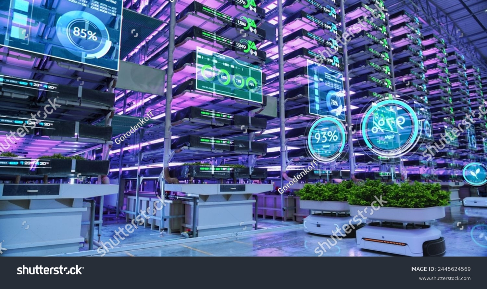
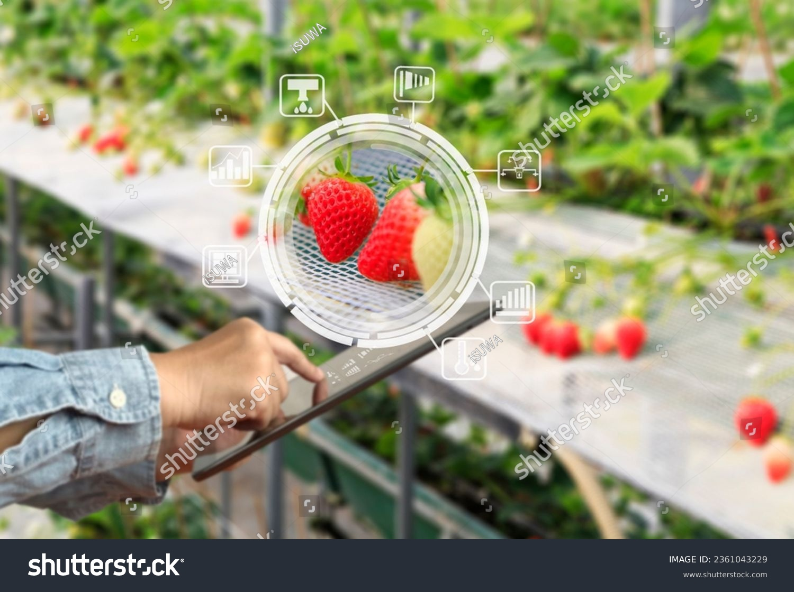

The future of growing, available today.
Intelligence at every level
At SUNFARM Consultancy, artificial intelligence isn't a buzzword, it's
the backbone of every farm we design and deploy. Whether we're fitting
out a purpose-built warehouse facility or installing a micro farm
within an existing office space, our AI-driven systems work
continuously behind the scenes to optimise every variable that affects
plant health, yield, and efficiency.
We are at the forefront of an agricultural revolution, and the
technology powering our farms is advancing at a pace that makes now
one of the most exciting times in the history of food production.
The technology behind vertical farming is evolving rapidly — what was
cutting-edge two years ago is already being surpassed, and the farms
we build today are designed to grow smarter over time.

Traditional farming is at the mercy of the environment. Indoor vertical farming removes that uncertainty, and AI is what makes that possible at scale. Our smart climate platforms monitor and autonomously adjust temperature, humidity, CO₂ levels, light spectrum, irrigation timing, and nutrient dosing, all in real time and without human intervention. Crucially, these systems don't just respond... they learn. Every harvest cycle makes the system smarter, meaning the longer your farm runs, the better it performs.
LED grow light schedules are dynamically adjusted based on crop growth stage, natural light availability, and energy tariff data, ensuring plants receive exactly the right spectrum and intensity while keeping running costs as low as possible.
Water and nutrient delivery is triggered by real-time sensor data rather than fixed schedules, eliminating waste and ensuring plants are never over or under fed. Our systems can detect early signs of nutrient deficiency before they become visible to the human eye.
Temperature and humidity are maintained within precise tolerances for each crop variety, with the system anticipating fluctuations based on weather data and building usage patterns, rather than simply reacting to them.
Camera arrays and environmental sensors work together to flag anomalies in plant growth, colour, and development, alerting our team to potential issues before they impact yield. In many cases, problems are identified and corrected automatically, without any human involvement at all.
The AI processes vast amounts of data from the growing environment to identify patterns and insights that inform decision-making and optimise farm performance.
The AI coordinates energy consumption across lighting, climate, and irrigation systems to minimise peak demand and, where applicable, align with renewable energy generation windows, reducing both costs and carbon footprint simultaneously.
Why it matters
Precision control means nothing is wasted — whether that's water, nutrients, energy, or labour. Farms managed by our smart systems require a fraction of the hands-on time that conventional growing operations demand.
AI-managed environments eliminate the unpredictability of conventional growing, delivering uniform quality and yield with a reliability that lets you make firm commitments to your customers all year round.
For office and commercial micro farm clients, the technology handles everything. A living, thriving farm that requires no daily attention and no ongoing horticultural expertise from your team.
